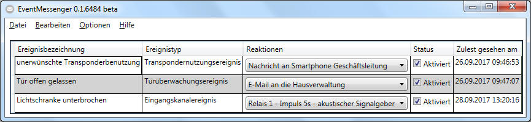

Willkommen zur integrierten Hilfe des EventMessengers.
Der EventMessenger kann Ereignisse von der
LSM.Basic.Online entgegennehmen
und daraufhin Reaktionen auslösen.
Bitte nehmen Sie sich einen kurzen Moment Zeit und schauen Sie sich nun an, wie
Sie das Programm korrekt einrichten können.